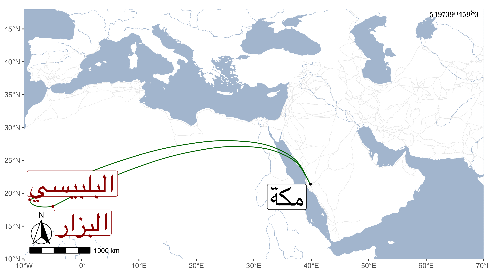

0902Sakhawi.DawLamic.ITO20230111-ara1.EIS1600.549739045983
Biography ID: 549739045983
170
أحمد بن عمر الشهاب البلبيسي البزار ، مات في يوم الجمعة ثاني عشر رجب سنة ثمان وثلاثين وثمانمائة وقد جاز الثمانين وكان من خيار التجار ثقة ودينا وأمانة وصدق لهجة جاور عدة مجاورات بمكة وسمع الكثير وأنجب أولادا رحمه الله . قاله شيخنا في إنبائه وأظنه والد السراج عمر الآتي وإن سميت جده في ترجمة شيخنا محمدا .
